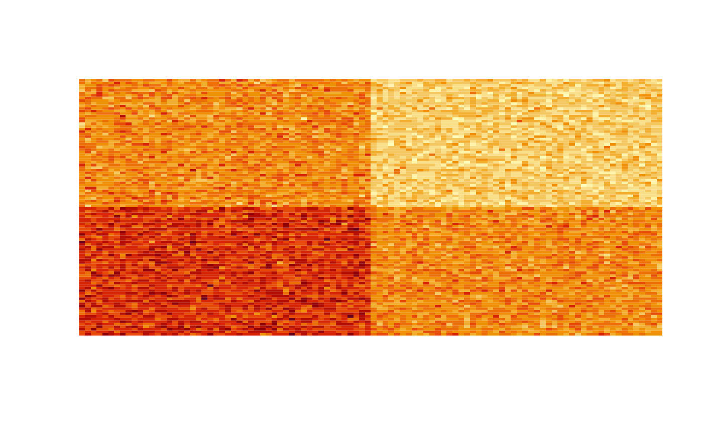
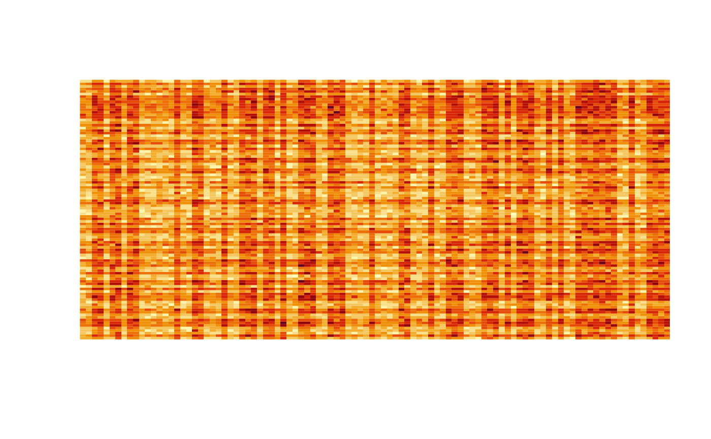
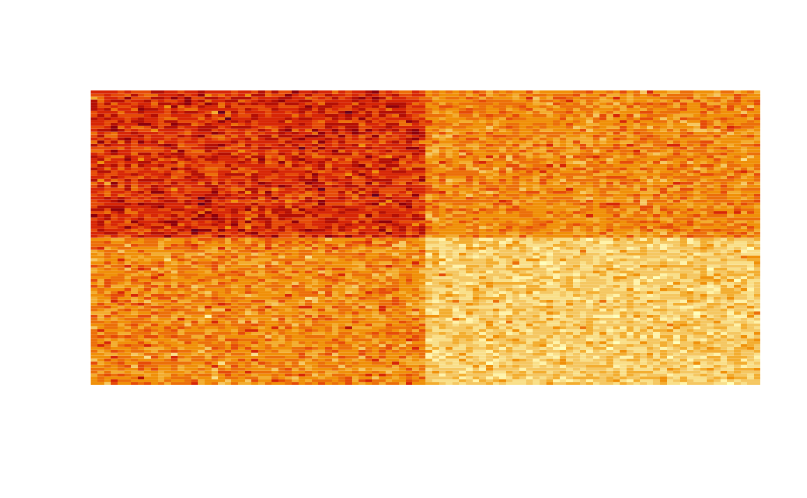

Introduction
Let \(X\) be a \(n\times m\) matrix, …
Toy example
BiAA Parameters
set.seed(123)
m = 50
n = 100
k = 1:5
c = 1:4
Original data
ax = 1:30; ay = 1:15
bx = 31:70; by = 16:30
data = matrix(runif(n * m, -1, 1), nrow = n, ncol = m)
data[ax, ay] = rnorm(length(ax) * length(ay), mean = -0.5, sd = 0.3)
data[bx, by] = rnorm(length(bx) * length(by), mean = 0.5, sd = 0.3)
image(data, xaxt= "n", yaxt= "n")

Shuffled data
srows = sample(n, n)
scols = sample(m, m)
sdata = data[srows, scols]
image(sdata, xaxt= "n", yaxt= "n")

Archetypes
arch = biaa::biaa(sdata, k = k, c = c, nrep = 3, maxiter = 10000)
Loading required package: nnls
Select desired model
barch = biaa::getmodel(arch, k = 3, c = 3)
Results
[1] 16.61407
[,1]
[1,] 0.008551489
Clustering data using the archetypes
maxalphas = apply(barch$alphas, 1, which.max)
orows = order(maxalphas)
maxgammas = apply(barch$gammas, 2, which.max)
ocols = order(maxgammas)
image(sdata[orows, ocols], xaxt= "n", yaxt= "n")
